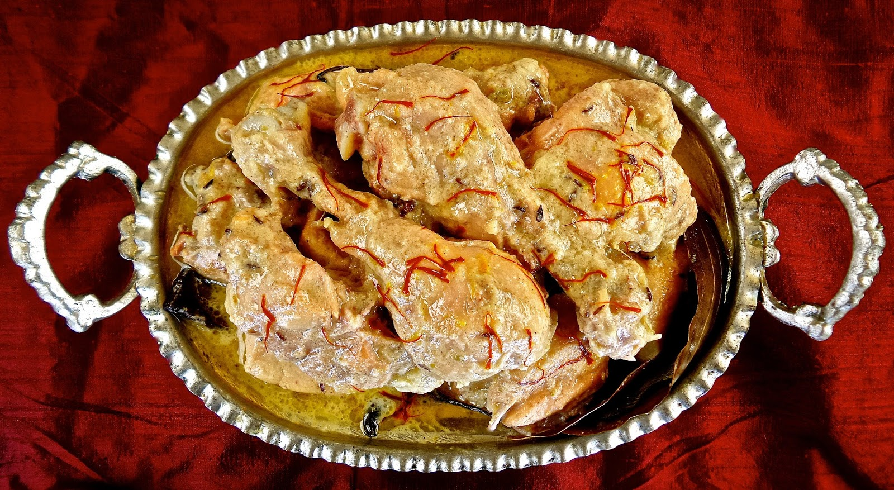

Desi Items
Alu Fulkopir Dalna

Dim er Dalna

Tomatto er Chutney
Ingredients (for 2 people)
- Tomatto (about 5-6)
- Sugar (half cup)
- Salt (two pinches)
- cinnamon (two small sized)
- Red Chillie (one)
- Turmeric powder (one tea spoon)
- Soyabin oil
- Black poppy seeds
- Ginger paste (one table spoon)
Hit the pan well then add soyabin oil about four-five table spoon. Let the oil get hot, make sure the hit is not too high. when the oil is releasing smokes add cinnamons and red . after tempering the spices add black poppy seed. and after tempering all the spices together add the tomattoes immediately. cook it well then cover it for five minutes. after the tomattoes are mushy break the large chunks into smaller chunks with your spatulla. give it the sprinkles of salt and turmeric powder and then cover it and rest it for another 5 minutes.
You can add water if the tomattoes are becoming too thick. Add sugar and ginger paste at this stage. stir it well.
Your bengali style niramish tomatto chutney is ready.
Dont forget to offer me :P
For the video tutorial of the recipie... click here
Snacks
White Sause Pasta

Samosa

In a medium bowl, mix flour, salt and butter until the mixture resembles fine bread crumbs. Pour in water, using more (up to approximately 1/4 cup) if necessary to make a smooth dough. Pat into a ball. Place on a lightly floured surface and knead 10 minutes, or until dough is smooth and elastic. Return to the bowl, cover and set aside.
Heat oil in a large, deep skillet to 375 degrees F (190 degrees C). Melt butter in a medium saucepan over medium high heat. Stir in onion, garlic, green chile peppers and ginger. Cook 5 minutes, or until onions are golden brown. Stir in turmeric, chili powder, ground lamb and salt. Cook until the lamb meat is evenly brown, about 10 minutes. Stir in garam masala and lemon juice. Continue cooking 5 minutes, then remove from heat.
Divide dough into 15 equal portions. Roll portions into balls, then flatten into 4 inch circles. Cut each circle in half. Dampen edges and form semicircles into cones. Fill cones with equal portions of the lamb meat mixture. Dampen top and bottom edges of cones, and pinch to seal. Carefully lower cones into preheated oil a few at a time. Fry until golden brown, 2 to 3 minutes. Drain on paper towels. Serve warm.
Veg Pasta
Masala Pasta
Sujir pitha
Cauliflower Pakora
Potato Chop
Lunch Items
Doi Chicken

Dahi Chicken is a truly indulgent delicacy that can be prepared in just a few minutes using some easily available ingredients. Read on as we share the simplest recipe to make this dish in the restaurant style at the convenience of your home. Soak the chicken chunks in lukewarm water with a small pinch of salt for 15 minutes. Then wash and clean the chicken and cut into equal sized cubes.
Step 2 To prepare this delicious chicken recipe, take a large bowl and add a paste of 2 small green chillies.Then add curd and marinate the chicken pieces along with ginger garlic paste, elaichi powder and salt. Once the chicken pieces are properly marinated, keep them aside for 2 hours so that the flavours are well-absorbed by the chicken pieces.
Step 3 Then, take a pan and add butter in it and turn it on medium flame. Bring it over high flame. If you want to make it healthy then you can use low-fat butter.The texture of curd is such that you can cook it even with minimum oil as it releases a creamy residue that makes it a healthy option to go for!
Step 4 Once the butter starts to melt, add onions and saute till they become light pinkish in hue. Once the onions are transparent, add the marinated chicken pieces and cook for 2 minutes. Put the lid on and let it simmer for 15 minutes. To make it more rich and creamy, you can add some fresh cream to this dish. It tastes better when you add some finely chopped coriander leaves and chopped chilies. You can also garnish it with cashew nuts.
Step 5 Once done, transfer the dahi chicken in a serving bowl and serve it hot with roti, paratha or naan.
Chicken Rezala
Kacchi Biriyani

Butter Chicken

Step 1 In a large bowl, mix yogurt, onion paste, green chillies, ginger-garlic paste, sugar, salt, green cardamoms, black cardamoms and mace powder. Add pieces of raw chicken in the bowl and mix well. Allow the chicken to marinate overnight. Once the chicken is well marinated, roast it in a tandoor or an oven till its 3/4th done.
Step 2 Now heat little butter in a pan over moderate flame. Add bay leaves, cloves, cinnamon, red chillies and crushed coriander seeds. Sauté the ingredients for half a minute. Now in the same pan, add a bit of onion, red chilli powder, coriander powder, kasoori methi powder and tomatoes. Sauté them for 5 minutes and once done, transfer the mixture in a blender to make a puree.
Step 3 Heat the remaining butter in a pan. Add the pureed mixture and bring it to a boil. Add marinated chicken pieces, salt, fresh cream and mix well. To make sure that the consistency is not too thick, add some water to the mixture. Now add sliced green chilies, crushed fenugreek leaves and let it simmer for few minutes. Bring it to a full boil.
Step 4 Transfer the dish to a serving bowl and garnish it with coriander leaves and cream. This butter chicken recipe is easy-to-make and can be made by using simple ingredients available in the kitchen. If you're a spice junkie and love all things spicy, then customize this chicken recipe a bit by adding more green chillis or black pepper powder. Try it and relish the burst of Indian flavours. Serve it with naan or rice.